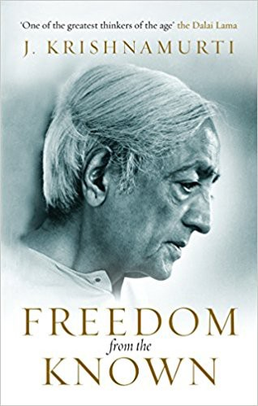

Freedom from the Known can be a tough book to crack, the lessons offered within are almost dismissed by the arguments made within the book, on top of that it's likely most won't be in a position to even accept what they read as they are reading it. Despite these barriers, there is still wonderful lessons here calling out our own values, our judgements and what is preventing us from being truly free and present in each moment.
Authority
Krishnamurti opens by trying to list out what are the things in life preventing us from true freedom. The list becomes more radical as time goes on. Here is a far from exhaustive list. -Second-hand words, such as books which cause us to become second-hand people. A sort of circular logic here. -Religious leaders and promise of something beyond this little life -"That is our daily life and in that, there is no hope, and therefore every form of philosophy, every form of theological concept, is merely an escape from the actual reality of what is." -Nationalism -Tradition -Pleasure -Memory -Fear -Belief -Relationships based on an 'image of the other end' -What we should be -Time -> "When I say I know you, I mean I knew you yesterday. I do not know you actually now." -The observer/observed division -Thought This goes as far as "There is no guide, no teacher, no authority. There is only you-your relationship with others and with the world-there is nothing else." but even then we also need to dismiss the current 'you', "Forget all you know about yourself; forget all you have ever thought about yourself; we are going to start as if we knew nothing."
Krishnamurti spends a lot of time explaining what we shouldn't do, how we should not behave, the elements of this book that drive us towards what we should do are to some extent frustratingly brief. However this can be explained as 'showing us the path' as opposed to pointing out every bend on the way, but he might argue that there even is a path.
Lack of Sympathy
Maybe it's arguable but Krishnamurti sounds like he believes not many are willing to change, "those who are fairly secure socially and economically or who hold dogmatic beliefs and are content to accept themselves and things as they are or in a slightly modified form" are left out in the cold. That leaves a lot of people out in the cold. Despite this, I would argue if you are in this position it's still worth pursuing this book. Krishnamurti does an excellent job of calling out the baggage each of us holds that keeps us from being truly free in his definition, and while he may argue that we cannot go in half-hearted, casting aside some of the things holding us back from a present without judgement is worth pursuing.
I would also argue there is a lack of psychological sympathy here. Krishnamurti's goals are painfully simple and yet incredibly difficult to achieve. His response is also to achieve these things in the immediate. Do it now, without much care for human psychology or the difficulty involved in re-shaping your entire worldview in such a radical way.
The 'Goal'
What's left after dismissing these elements of our own minds? In Krishnamurti's words, "What is important is not a philosophy of life but to observe what is actually taking place in our daily life, inwardly and outwardly." And "Freedom is a state of mind-not freedom from something but a sense of freedom, a freedom to doubt and question everything and therefore so intense, active and vigorous that it throws away every form of dependence, slavery, conformity and acceptance." There is essentially a psychological death that will free us to observe the new and to truly live. "To die is to have a mind that is completely empty of itself, empty of its daily longings, pleasures and agonies. Death is a renewal, a mutation, in which thought does not function at all because thought is old. When there is death there is something totally new. Freedom from the known is death, and then you are living."